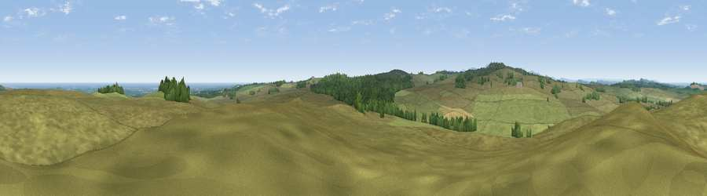

Viewpoint near Warenford
#11130 in England · top 44% of its area beats it · near Warenford · open accessWhere it is
The exact computed spot (NU 11675 26575). Click the marker for map links.
Public access: this spot lies on mapped open-access land (CRoW Act 2000) — you may roam here on foot. Computed from Natural England's CRoW access layer and OpenStreetMap rights of way — not the legal definitive map. Always verify locally.
The view, rendered

A 360° render of this exact spot computed from the terrain model, tree cover and land cover — summer colours, afternoon light, calibrated against photographs of famous viewpoints. Real trees, hedges and buildings will differ in detail.
The panorama
Grey silhouette: terrain skyline in each direction (720 bearings, Earth curvature and refraction included). Dashed green: skyline with trees (+15 m) and buildings (+8 m) as obstacles. Blue strip: how far the ground is visible on each bearing.
Where the view opens
Wedge length = distance to the farthest visible ground on that bearing (vegetation-aware). Rings at 10, 25 and 50 km.
What fills the view
85% grassland · 8% woodland · 3% water · 3% cropland
Angular shares of the visible panorama (visual magnitude), not map area. Landscape diversity 0.25 (0–1 Shannon).
Key numbers
More beautiful places nearby
The staircase of upgrades: each row has a higher view potential than everything closer. Driving times are estimates from straight-line distance, calibrated against real road routing — check an actual route before setting out.
| Place | Direction | Drive | Score |
|---|---|---|---|
| Viewpoint near Warenford | NNE · 0 km | ~2 min | 70.6 |
| Viewpoint near Warenford | ENE · 1 km | ~3 min | 73.4 |
| Viewpoint near Eglingham | SSW · 4 km | ~8 min | 73.5 |
| Viewpoint near Chillingham | WSW · 4 km | ~9 min | 88.1 |
| Viewpoint near Easington | SSE · 123 km | ~148 min | 90.2 |
| The Knoll | S · 542 km | ~489 min | 91.0 |
55.53277, -1.81659 · source: screening · position refined by local search. Computed location — check access rights before visiting.